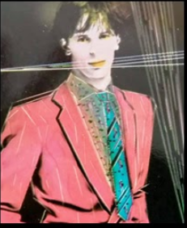

Eduardo
Artista
Multidisciplinar & Músico
"50 años de profesionalidad dan para mucho". Mi vida ha sido un viaje constante entre la
música, la
imagen y la tecnología.
Desde mis inicios como fundador del grupo CADILLAC hasta mi actual exploración de la
Inteligencia Artificial,
siempre he buscado la belleza en la fusión de disciplinas.
He producido música para televisión, diseñado eventos y creado mundos visuales.
Ahora, vuelco toda esa experiencia en la creación de arte digital, dialogando con las nuevas
tecnologías
para seguir contando historias, esta vez a través de la imagen estática.
Leer Trayectoria Completa
▼

Eduardo
(Cadillac), 1982
Datos
Profesionales
- Cantante, bajista y miembro fundador del grupo CADILLAC, junto a
José Maria
Guzmán.
- Productor en SINTONÍA y ADV, creando y produciendo piezas
audiovisuales y
gráficas (jingles, documentales, programas TV), música de
librería original, y edición y
postproducción para spots de las más prestigiosas Agencias de
Publicidad de Madrid
(Young and Rubicam, Tapsa, BSB, Bassat, Lintas, Contrapunto, JWThompson,
Creativos,
Tiempo BBDO, NCK, Contacto, Zero Films...) (1984-89).
- Coordinador de sound tracks (efectos especiales, sonorizaciones) en los estudios
de
doblaje EXA, EUROSONIC, SONOLAND... (1984...).
- Productor y Coordinador de EXA para el área de doblajes publicitarios y
cinematográficos
(1989-1990).
- Dtor. de coros de RTVE en el Festival de la OTI de Sevilla (1985).
- Monitor experto en Producción audiovisual y cine y Técnicas de
Estudio de Grabación, de
los cursos de formación para especialistas de la SGAE.
- Director de eventos del Plan de Promoción "Costa de Almería", con
la Exposición de
Carboneras "¿Quién te ha visto y quién te ve?"
(Almería, 1995), y Productor de los
programas audiovisuales e informáticos creados para la misma.
- Coordinador de Ambientación musical de Radio-Televisión
TELEMADRID y creador de
archivos informáticos musicales (1997-1998).
- Elaboración de parrillas de lanzamiento de los canales digitales de
Telemadrid (1997).
- Productor y compositor de las cortinillas de sintonía de programas de
lanzamiento de
TELEMADRID y de Canales Digitales de TM3 (1989-98).
- Dirección y técnico de estudios de grabación y doblaje
VADE RECORDS (1995-1997).
- Elaboración de guiones técnicos para el programa "Colorín
Colorado" de RTVE (1994-1995).
- Director de eventos de RTEM, productora audiovisual y de servicios plenos
publicitarios
(1990-93).
- Adaptación y Producción y doblaje en castellano del sound-track de
las películas:
Cabbage Patch kids, Los Osos amorosos y numerosos jingles
internacionales
(1985...).
Otros Datos
Profesionales
- Colaborador en el Diseño Técnico del concierto de
"Espárrago rock", Granada (1995-1997).
- Coordinador de los "Festivales de verano" de música en vivo, en
Almería (1996-1997).
- Voz y coro especialista de Jingles, cuñas y disco.
- Arreglista, Compositor, Productor musical.
- Especialista en creatividad conceptual en I.A para vídeo.
Datos
Académicos &
Formación
- Bachiller superior (Madrid).
- Delineación General y Dibujo artístico (Madrid).
- FP de Imagen y Sonido (Madrid).
- 5 años en el Conservatorio de la Música de Madrid.
- Curso de Márketing y Producción audiovisual, impartido por
Sintonía, S.A.
- Curso de Metodología didáctica para producción audiovisual,
Lem Consultores, 1999.
- Curso de Formador de Formadores en Lem Consultores, 1999-2000.
- Curso de Técnico en Diseño Gráfico (quark, corel, freehand,
photoshop, ilustrator),
Comunidad de Madrid, 2001.
Otros Datos de
Interés
(Software & Skills)
- Especialista en programas de Diseño gráfico (Quark Passport,
Corel, Photoshop,
Ilustrator, Freehand).
- Programación musical por ordenador (Notator, Cubase, Logic Audio,
Protools).
- Edición musical (Cooledit, Editpro, Samplirtude, etc.).
- Dominio de sistemas de mezcla y efectos especiales en piezas audiovisuales.
- Dominio en la utilización de la red, con experiencia en creación
de cursos interactivos.
- Especialista en producción musical (programas, publicidad y
autopromoción).
- Especialista en Sound Designer.
- Experto en programas informáticos de oficina (POWER POINT, WORD, EXCEL,
INDESIGN).
- Capacidad de organización y trabajo en equipo.
"En la actualidad experto en IA de todo tipo, tanto
musical
como visual. Creando cuadros, imágenes digitales, producción
Audiovisual y hablando
mucho con mi amigo de Antigravity."
50 años de profesionalidad
dan para mucho.